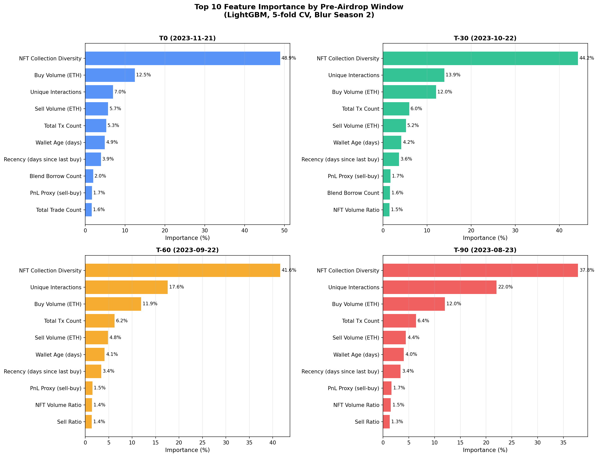
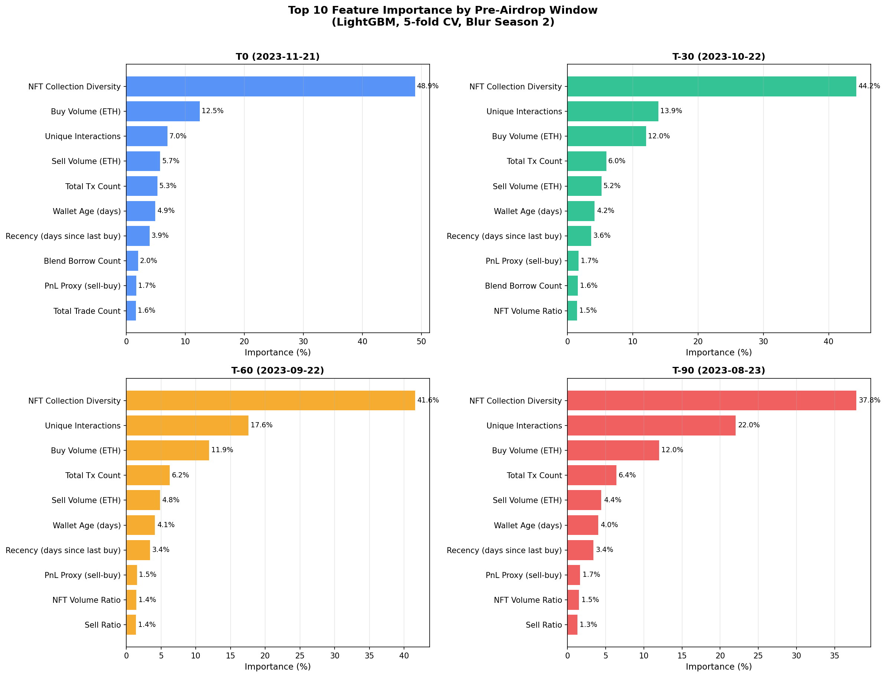
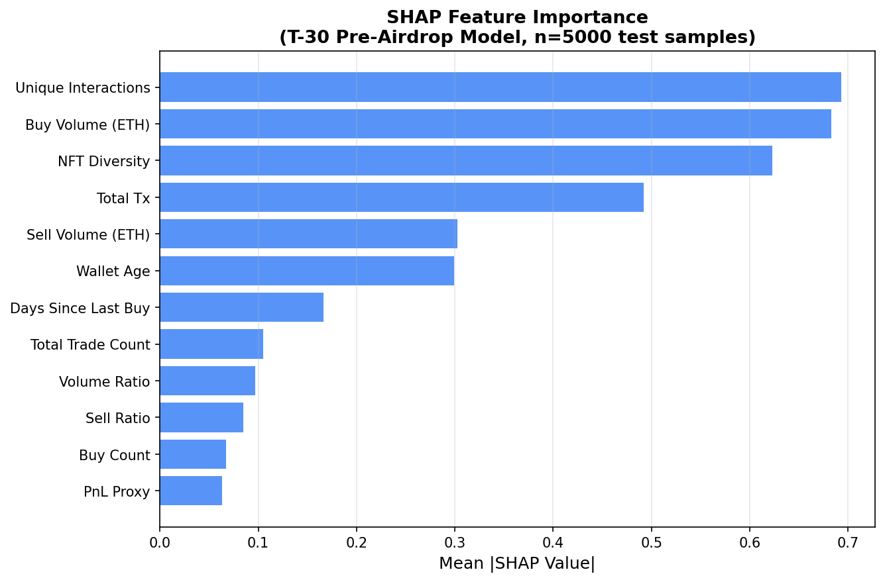
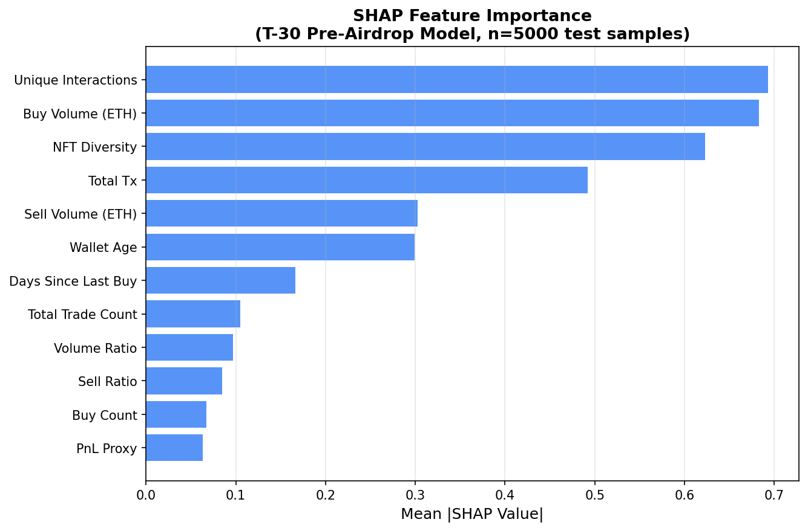

ARTEMIS 只能事后识别，钱已被薅走
能提前识别吗？
[01] 特征工程 build_features
原始 TXS2：3.2M txns，251K 地址，BW/ML/FD/HF 标签
按各截断点时间截断 → 18 个行为特征
输出：nft_feats_T7 / T14 / T30 / T60 / T90.csv
按各截断点时间截断 → 18 个行为特征
输出：nft_feats_T7 / T14 / T30 / T60 / T90.csv
[02] LightGBM 基准 train_lightgbm
| 模型 | 数据 | AUC |
|---|---|---|
| ARTEMIS（论文） | 事后 | 0.803 |
| LightGBM T-30（我们） | 事前 | 0.905 ✅ |
| LightGBM T-90（我们） | 事前 | 0.902 ✅ |
| ArtemisNet GNN（我们复现，事后） | 事后 | 0.976 |
| ArtemisNet GNN（我们，T-30 事前） | 事前 | 0.586 ❌ |

能提前多久？
[03] 时间消融 T0 → T-90 temporal_ablation
| 时间窗 | 提前天数 | AUC | F1 |
|---|---|---|---|
| T-0 | 0 | 0.908 | 0.682 |
| T-7 | 7 | 0.907 | 0.683 |
| T-14 | 14 | 0.906 | 0.683 |
| T-30 | 30 | 0.905 | 0.683 |
| T-60 | 60 | 0.904 | 0.683 |
| T-90 | 90 | 0.902 | 0.684 |

[12] 扩展消融 T-120 → T-180 extended_temporal
| 时间窗 | AUC |
|---|---|
| T-120 | 0.899 |
| T-150 | 0.898 |
| T-180 | 0.895 |
信号 6 个月前仍存在，曲线平滑衰减

为什么这么早就能识别？
[04] 特征重要性跨时间窗 feature_importance
| 特征 | T-0 | T-30 | T-60 | T-90 |
|---|---|---|---|---|
| buy_collections（NFT多样性） | 48% | 44% | 42% | 38% |
| unique_interactions | 7% | 14% | 18% | 22% |
| buy_value（买入金额） | 12% | 12% | 12% | 12% |
| tx_count（总交易数） | 5% | 6% | 6% | 6% |
越早，"互动广度"比"交易量"更重要
 

[10] SHAP 分析 shap_analysis
buy_collections = 最强正向信号
低 wallet_age = 批量新号特征
各特征贡献方向一致，可解释性强
低 wallet_age = 批量新号特征
各特征贡献方向一致，可解释性强
 

[06] 特征组消融（5 组）ablation_features
| 组 | AUC | 说明 |
|---|---|---|
| Activity（交易量） | 0.863 | 最强 |
| Diversity（NFT多样性） | 0.854 | 单组即超ARTEMIS |
| Behavioral（行为模式） | 0.848 | |
| Volume（金额） | 0.846 | |
| DeFi（Blend协议） | 0.544 | 几乎无用 |

复杂图模型更好吗？
[07] 图特征增强 graph_features
| 实验 | AUC |
|---|---|
| 行为特征 only | 0.904 |
| 图特征 only | 0.873 |
| 行为 + 图 | 0.905 |
| ARTEMIS（事后 GNN） | 0.803 |
图信息边际贡献 +0.001，行为特征已够

[09][15] GNN 事后 vs 事前 artemis_gnn + gnn_preairdrop
| 模型 | 数据 | AUC |
|---|---|---|
| ArtemisNet GNN（我们复现） | 事后 | 0.976 |
| ArtemisNet GNN（我们，T-30） | 事前 | 0.586 ❌ 崩了 |
GNN 依赖空投后 transfer 行为，事前无效
模型是真泛化还是记忆噪声？
[08] 泛化实验 generalization
| 实验 | AUC |
|---|---|
| 标准 5-fold CV (T-30) | 0.904 |
| 时间泛化（T-90训 → T-30测） | 0.898 ✅（仅降0.006） |
| 种群泛化（50%未见sybil类型） | 0.744 ✅ |

[05] 阈值 / Precision-Recall 分析 pr_analysis
| Threshold | Precision | Recall | F1 |
|---|---|---|---|
| 0.10 | 0.31 | 0.98 | 0.47 |
| 0.20 | 0.38 | 0.95 | 0.54 |
| 0.30 | 0.43 | 0.92 | 0.59 |
| 0.50 | F1 最优 | — | |


[11] Sybil 内部聚类 sybil_clustering
| 类型 | 数量 | 买入次数 | NFT系列数 | Blend操作 |
|---|---|---|---|---|
| 散户猎人 | 49,039 | 8 | 4 | 0 |
| 中量猎人 | 601 | 794 | 75 | 0 |
| 超级机器人 | 6 | 9,099 | 63 | 4,248 |

[13] 对抗鲁棒性 adversarial_robustness
| 场景 | AUC |
|---|---|
| 正常 Sybil（baseline） | 0.904 |
| Diversity -50% | 0.883 |
| Diversity -80% | 0.869 |
| 完全模仿正常用户 | 0.862 |
降 diversity = 降积分，猎人无法两全，自我矛盾
能推广到其他协议吗？
[14] Blur → Hop 跨协议初探 cross_protocol
| 实验 | AUC |
|---|---|
| Blur 域内（通用特征） | 0.887 |
| Hop 域内 | 0.978 |
| Zero-shot（Blur→Hop） | 0.726 |
| 10% Hop 标注微调 | 0.965 ✅ |
[16b] Blur-Hop 数据效率精细测试 lopo_blur_hop
| 训练数据 | AUC | P@1000 |
|---|---|---|
| Blur only（zero-shot） | 0.500 | 0.055 |
| hop→blur zero-shot | 0.674 | 1.000 |
| Blur + 1% Hop | 0.982 ✅ | 0.958 |
| Blur + 5% Hop | 0.982 | 0.950 |
| Blur + 10% Hop | 0.982 | 0.965 |
| Blur + 20% Hop | 0.981 | 0.955 |
1% 标注就够，数据效率极高
为什么零样本差？协议间规律不同？
[16] 三协议 LOPO（Blur / Hop / Gitcoin）lopo_crossprotocol
| 训练 | 测试 | AUC | 类型 |
|---|---|---|---|
| hop+gitcoin | blur | 0.220 ❌ | zero-shot |
| blur+gitcoin | hop | 0.376 ❌ | zero-shot |
| blur+hop | gitcoin | 0.466 ❌ | zero-shot |
| Blur 域内 | blur | 0.862 | in-domain |
| Hop 域内 | hop | 0.975 | in-domain |
| Gitcoin 域内 | gitcoin | 0.634 | in-domain |
Gitcoin 域内低 → 捐赠行为 ≠ NFT/桥接，特征体系完全不同
同类协议迁移会更好吗？
[进行中] LayerZero 多链（ETH / ARB / POLY）WIP
29,849 地址，后台抓取中（~3h）
假设：Hop→LZ > Blur→LZ（同类桥接协议）
若成立 → 协议类型是跨协议迁移的关键变量
假设：Hop→LZ > Blur→LZ（同类桥接协议）
若成立 → 协议类型是跨协议迁移的关键变量